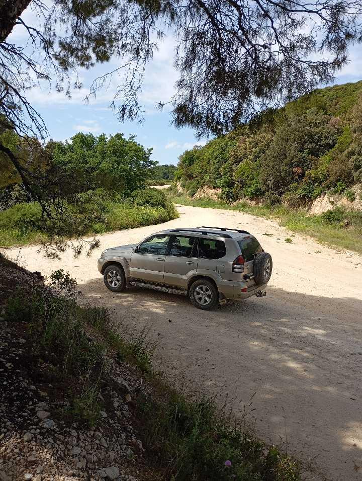

До 18 монастырей, доступных по суше, и келии в лесных чащах, куда не заезжают афонские маршрутки.

На фото — джип на грунтовой дороге Афона. Полный привод, кондиционер, 7 мест для паломников. Проезжает к келиям в лесных чащах, куда не ходят афонские маршрутки.
Цена: от 620€ за машину 1-до 7 чел. Топливо и разрешения включены.
Заказать: WhatsApp +30 694 447 6923